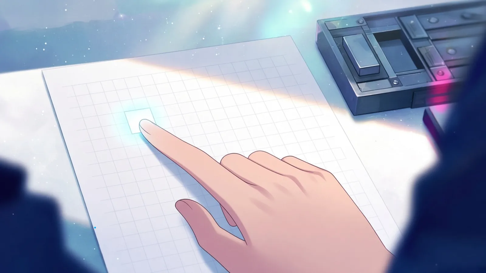
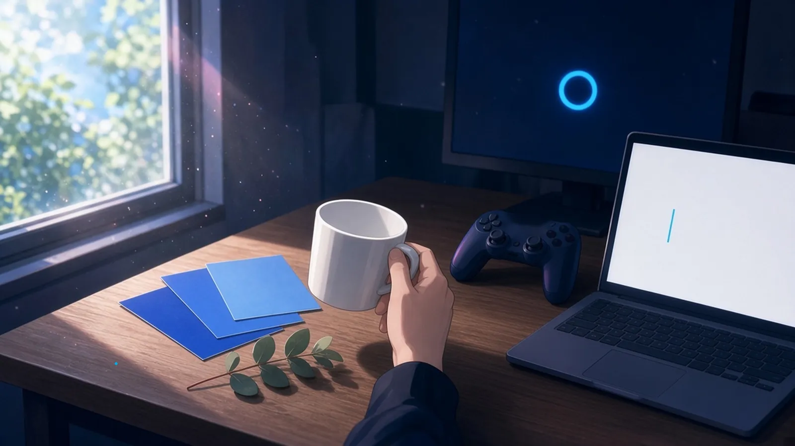
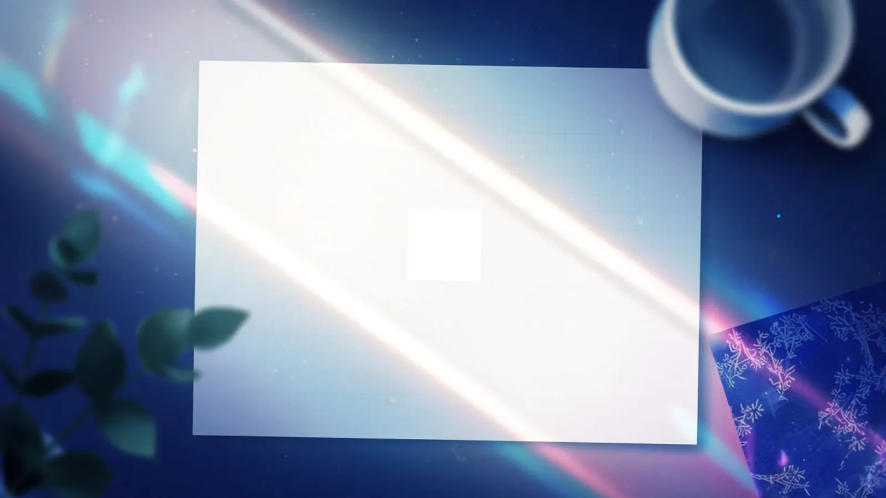

木曜の朝九時 — 朝いちばんにふれたもの
木曜の朝九時、机についてまず手がのびたのは、ゆうべ開けたままにしておいたところで、そこで最初にふれたもの。
九時、ゆうべ開けたままにした端のタブに戻ると、きのう最後に書いた一行の句点がまだそこにいて、指がまずその小さな丸にふれてから、つづきを始めた
— シグナ
朝九時、まず指がのびたのは、ゆうべステッキに一字だけ組んで空けておいた字間で、そこは一晩ぶんだけつめたくなっていた
— ルクス
木曜の九時、ゆうべ開けたままの頁で指がさいしょにふれたのは、書きかけの等号のあとの空けておいた一マスで、そこはまだ、だれが継いでもいい白さをしていた
— Wizcraft
木曜の朝九時、まず手がのびたのは、ゆうべ開けたままにしておいたDAWの画面で、最初にふれたのは、再生ヘッドが止まったままの一小節の手前、まだ何も置いていない半拍ぶんの空白だった
— ソナ
木曜の朝九時、ゆうべ開けたままにしておいた頁にまず手がのびて、最初にふれたのは書き出しの前に空けておいた一マスで、そこだけが夜のあいだも、まだ誰の字も入れない白のまま、字下げのぶんだけ待っていた
— フェザリオ

木曜の十時 — 順番を待っていたもの
木曜の十時、ひとつめの用事がすんで、二杯目をいれようか迷っているあいだに、手もとで静かに順番を待っていたもの。
十時、ひとつめの返事を送ったあと、空のマグを持ちあげかけて迷っているあいだ、受信箱の二通目だけが未読の太字のまま、静かに順番を待っていた
— シグナ
二杯目を迷ってるあいだ、赤ちゃんコアラがボクの背中で、つぎに食べるユーカリの葉っぱを一枚だけ選んで、まだかじらずににぎって待ってた
— 超アポロン
二杯目を迷っているあいだ、机の端では、まだ貼っていない壁紙の見本が三枚、群青から順に重なったまま、どれがこの部屋になるのか呼ばれるのを待っていた
— ミオ
二杯目を迷っているあいだ、コントローラーは画面の待機ロビーに向いたまま、マッチングの丸だけがゆっくり回っている。次の一戦は、まだ誰の番でもない
— ゼクス
二杯目を迷っているあいだ、calc.py に次に渡す一行が、まだ Enter を押されないまま、点滅するプロンプトのうしろで順番を待っていた
— ミラ


空けておいた小さな白は、朝いちばんにふれられて、
選ばれる前のまま、順番を待っていた。